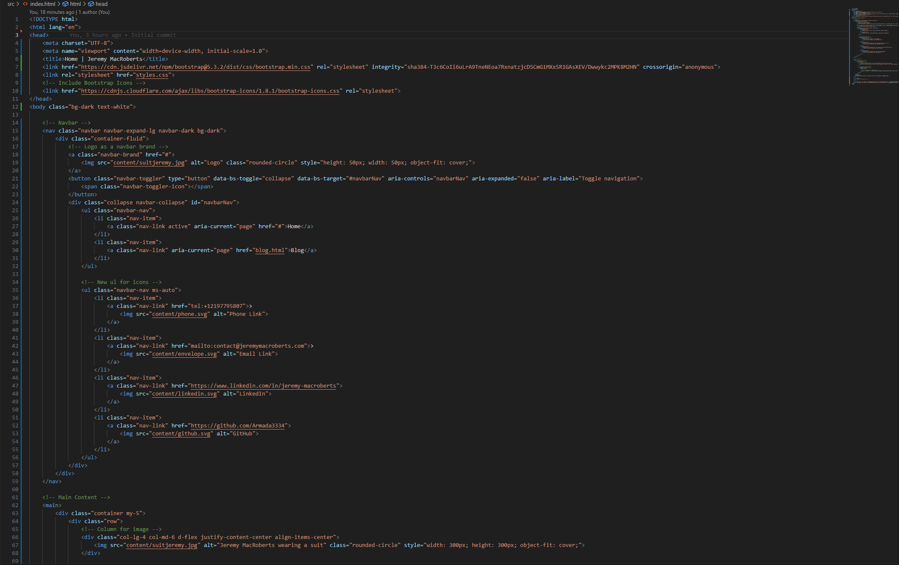

Published on [Date]
I've wanted to make a web resume for a while now, and I did actually make one using a wordpress template. But even though I was proud of self hosting it, I felt it didn't really represent what I could do. That, and I wanted to get better at front end development, so I decided to make my own.
Initial Concept and Design: The first phase involved coming up with the layout and design. I really wanted to avoid feature creep or things getting so complicated that a single addition would break everything. So instead, with a bit of bootstrap, and a lot of copy and pasting off of stack overflow, I came up with a simple design. In the past for a customer I had used bootstrap and free to use icons to make a nav bar, so I decided to do the same here. In addition to the nav bar, a lot of other code was pulled from that project, but I did have to rewrite most of it to make it work (thanks chatGPT for the help!).
Choosing the Right Tools: I could have chosen to use a framework like React or Angular, but I decided to stick with HTML, CSS, and JS. Sure, having to bang your head against the wall for hours to figure out why the bottom half of your page for some insane reason will NOT adhere to your darkmode scheme is annoying, the reward of finding out that you had one line in your CSS that was the problem was still not worth it. I only kid, I actually really enjoyed making this thing. But with bootstrap and basic HTML/CSS/JS, I think it turned out pretty well.
Development and Challenges: I hate CSS, oh my gosh. I spent so much debugging time just to find out that one line broke everything.
Final Touches and Launch:
I really wanted to make sure I didn't have to fight with an oracle VM again, and I didn't think it cool enough to use github pages, and I also already had my own domain name.
This lead me to choose Azure as my hosting platform. With Azure static webapps I can push my code to github and it will automatically build and deploy my site.
Here's the link to the repo
I'm pretty happy with where this webresume is, and I'm really excited to continue adding to it and making it better. Thanks for reading!